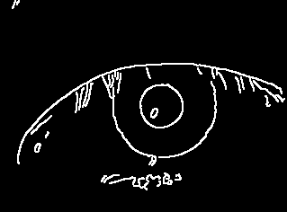

Reconocimiento de Caras
Uso de PCA para análisis de imagenes
Presentado por Juan Pablo Bottaro
Pasos del Método
- Analizar con PCA caras de entrenamiento
- Extraer autocaras que mejor expliquen variación
- Definir y ajustar con caras de test umbral de distancia
Ejemplos de entrenamiento
Cara Promedio
Autocaras (25 más significativas)
Proyectando caras
Ajustando distancias
Usamos el set de test s37-s41
Un poco de realidad
Caras no ideales
No caras
Resultado
Reajustamos umbral con caras poco ideales
Más sobre Caras
Presentado por Pablo Rodriguez Zivic
PCA no es la única
Si los datos son no-negativos,
querríamos que la descomposición también lo sea
PCA
Con mi dataset
NMF
NMF Ortogonal
Y como anda?
Transformada de Hough
Aplicaciones para detección de iris
Presentado por Juan Pablo Bottaro y Pablo Rodriguez Zivic
Pasos del Método
- Obtener bordes con Canny/Sobel/Roberts/etc.
- Tomar cada punto borde como centro de un circulo de radio variable.
- Tomar los puntos con más intercecciones de círculos como centro de los posibles iris.
Imagen original y Canny
Idea para detectar círculo

Buscando circulos
Elección del threshold
Consideramos que A(x,y,r) es un círculo, si
$A(x,y,r) > 2\times\pi\times r\times f$
Detección de iris
- Descartamos círculos repetidos
- Buscamos círculos concéntricos